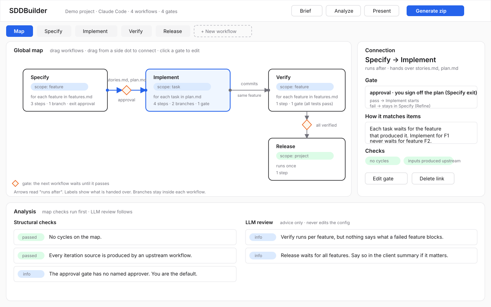
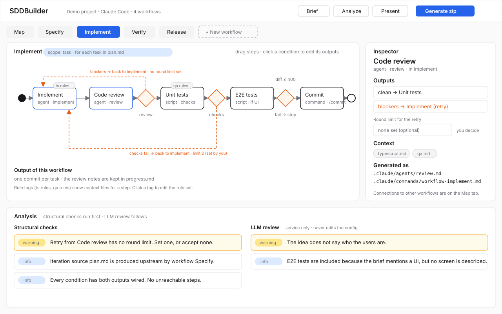
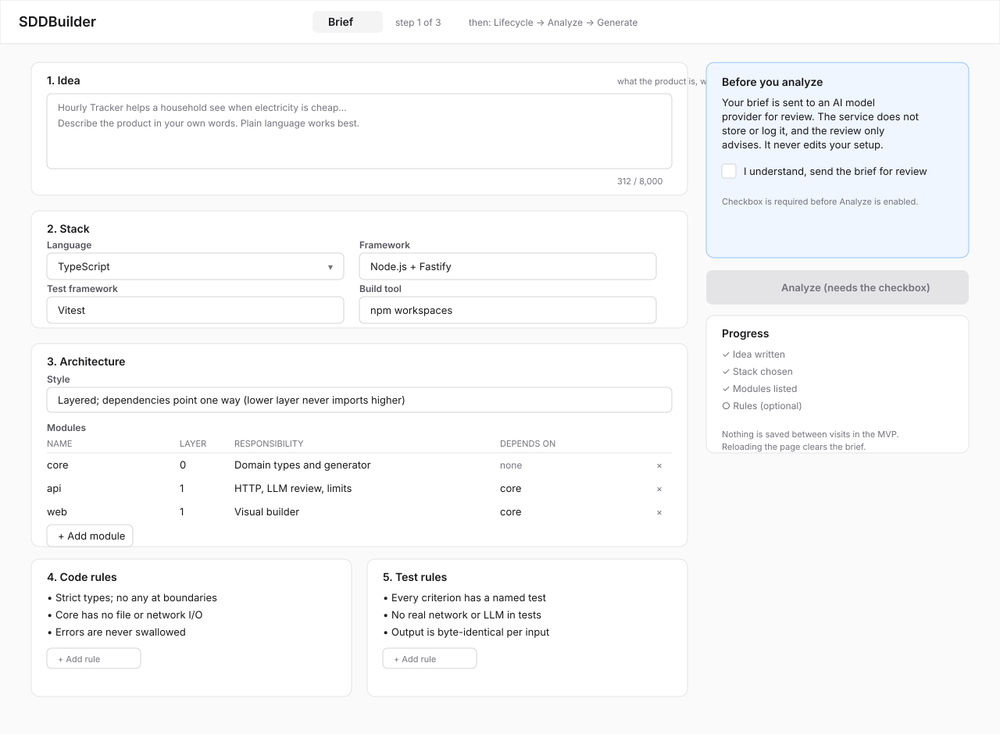
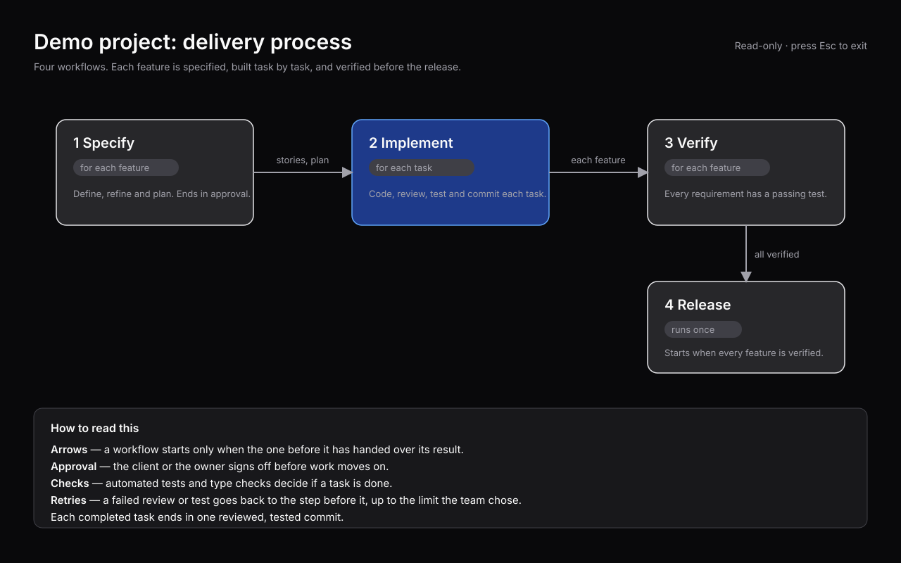
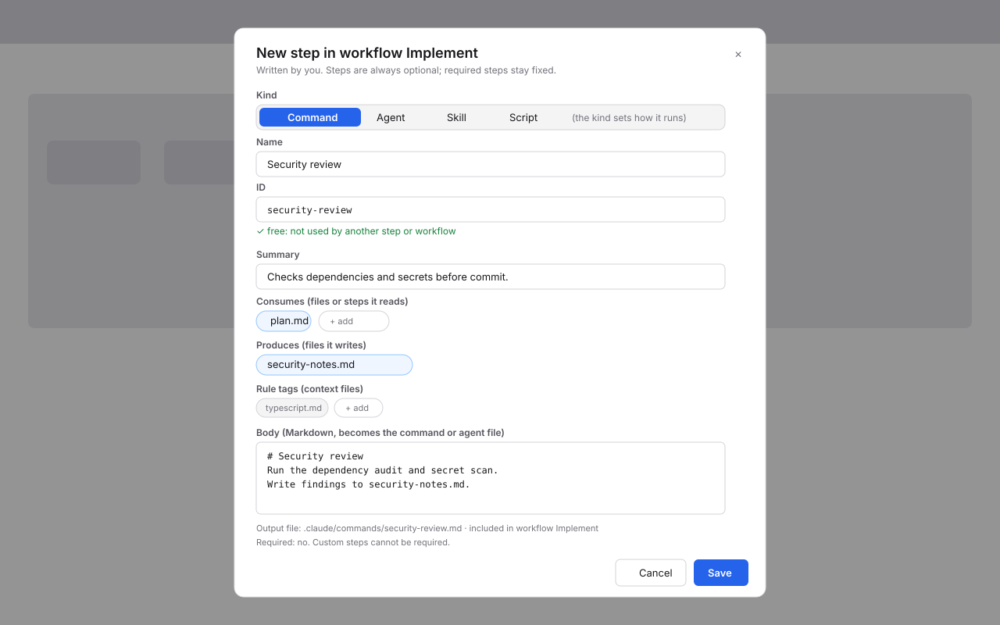
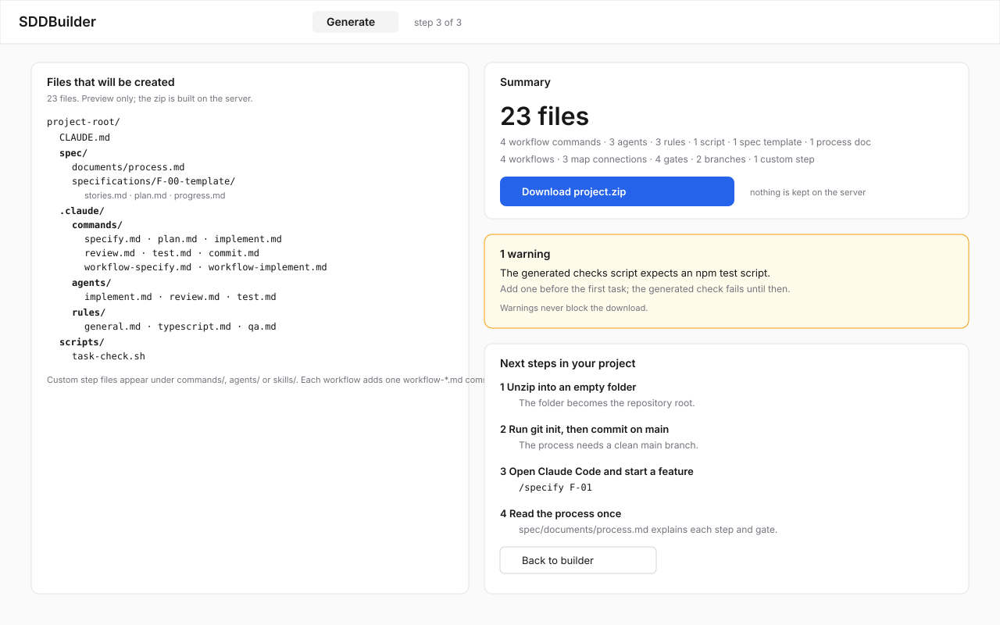
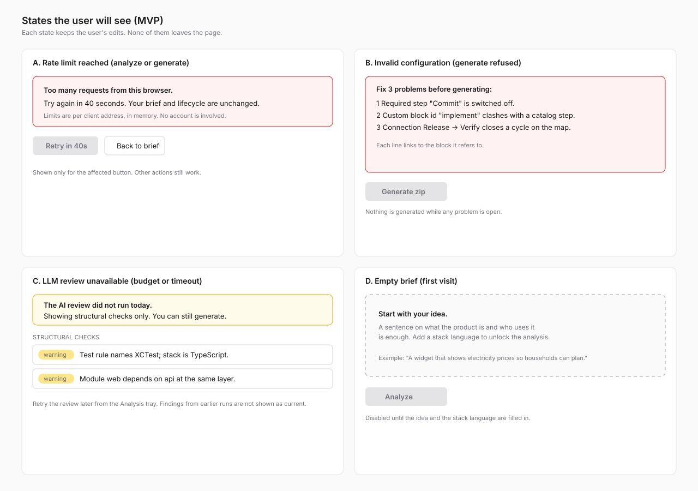

These are wireframes, not the final UI. They agree the layout before any code is written. Colours, fonts, icons and wording are placeholders. Each screen is also a standalone SVG in this folder.
One diagram per project. Workflows are connected; each shows its scope and what it iterates over. Connection labels show what is handed over. A gate on a connection holds the next workflow until it passes. The inspector explains the gate and how a connection matches items.

One tab per workflow. Ordered steps, quality gates and branch arrows that go back to an earlier step. Round limits are optional and shown as "none set" until the user sets one.

Idea, stack, architecture modules, code and test rules. The privacy notice sits next to the Analyze button and must be accepted before the brief is sent.

Full-screen, read-only global map for a client conversation, with a plain-language key.

Writes one custom step: its kind (command, agent, skill or script), the workflow it belongs to, its inputs and outputs, and its body. Custom steps are always optional.

Preview of the file tree, a summary, warnings that do not block the download, and next steps for the user's own repository.

Rate limit, invalid configuration, LLM review unavailable, and an empty brief. Each keeps the user's edits.
